class: title-slide count: false .logo-title[] ## ELECTENG 209 # Electronics Systems Design ### Voltage and Current Sensors .TitleAuthor[Duleepa J Thrimawithana & Grant A Covic] --- layout: true name: template_slide .logo-slide[] .footer[[Duleepa J Thrimawithana](https://www.linkedin.com/in/duleepajt) & [Grant A Covic](https://www.linkedin.com/in/grant-covic-179546a/), Department of Electrical, Computer and Software Engineering (2020)] --- name: S1 # Learning Objectives - How does an energy monitor works? - What should be the functionality of your hardware design? - The design process - Revising circuit analysis techniques - Understanding how the source and load would behave - Modelling the source and the load - Deriving the ranges of voltage and current we expect to measure - How do we sense the AC voltage? - Designing a voltage sensor circuit - How do we sense the AC current? - Designing a current sensor circuit --- name: S2 # Lecture Quiz - The lecture quiz is now available on Canvas - Quiz is available for 3 days and allows 3 attempts - Best of the 3 attempts taken as the final score --- class: title-slide layout: false count: false .logo-title[] # Hardware for the Wireless Energy Monitor ### Functional Requirements --- layout: true name: template_slide .logo-slide[] .footer[[Duleepa J Thrimawithana](https://www.linkedin.com/in/duleepajt) & [Grant A Covic](https://www.linkedin.com/in/grant-covic-179546a/), Department of Electrical, Computer and Software Engineering (2020)] --- name: S3 # The Utility Grid .center[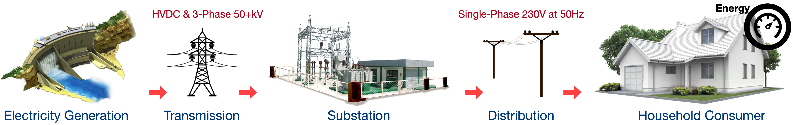] .left-column-s[ - Electricity is transported from generation sites to house through a network of transmission and distribution lines - Nominal voltage supplied to NZ houses is single-phase 230V<sub>RMS</sub> at 50Hz - Household appliances are connected to power points (sockets) to be powered - Active (A), Neutral (N) and Earth (E) are the 3-pins found in a socket - Voltage between A to N and current flowing through A or N needs to be measured to determine energy consumption of the appliance - Need to know magnitudes as well as phasor information ] .right-column-s[ .center[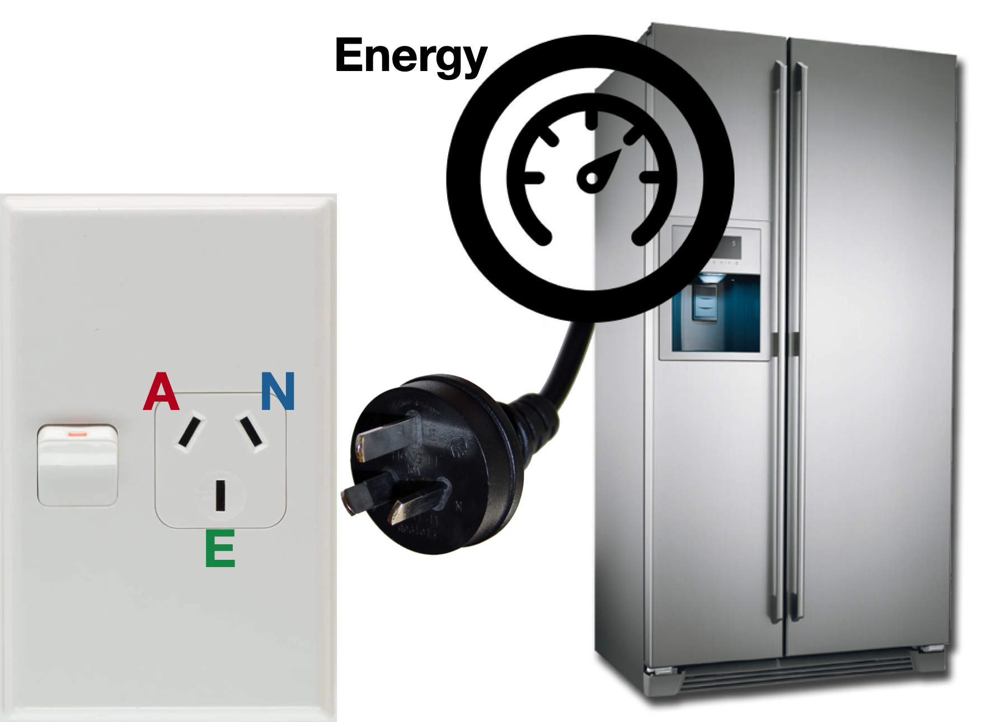] ] --- name: S4 # Scaled Down Hardware Test Platform - Developing hardware to operate at 230V<sub>RMS</sub> require engineers to follow strict safety protocols - As junior engineers, you need a safer platform to work with during this design course - When using a safer scaled down test platform, it is not possible to use a typical appliance as a load - Since a typical household appliance behaves as an inductive impedances we can emulate one with an inductor and a variable resistance - A test platform consisting of a 14V<sub>RMS</sub>, 500Hz source and a variable load impedance is provided to you - The load provided to you to emulate an appliance consists of a fixed inductor (4mH ± 20%) in series with a variable resistor (5Ω to 105Ω) .center[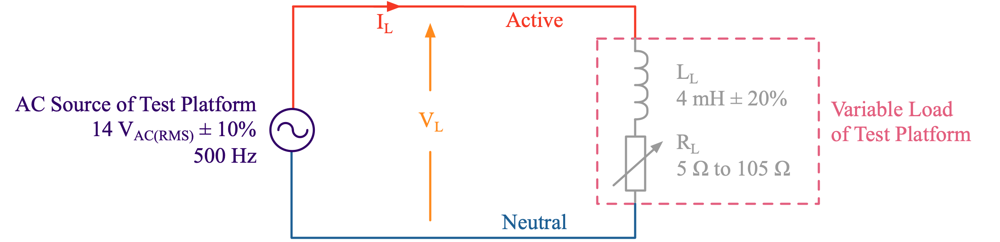] --- name: S5 # The AC Source .center[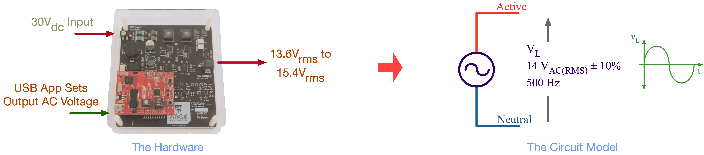] - A source that produces a nearly sinusoidal AC voltage is provided to you - The voltage generated by this source can be expressed in time-domain as \\[ v\_{\text{L}}(t) = V\_{\text{L(pk)}}\sin \left( \omega\_{\text{L}} t \right) \quad \text{where} \quad \omega\_{\text{L}} = 2 \pi f\_{\text{L}} = 1000 \pi \quad \because \ f\_{\text{L}} = 500\,\text{Hz} \\] - RMS of this voltage, V<sub>L</sub>, can be set to between 13.6V<sub>RMS</sub> and 15.4V<sub>RMS</sub> via a software application - This AC source needs to be powered by providing 30V<sub>DC</sub> from a bench-top DC power source - It employs a switched-mode converter to synthesize an AC output voltage from a DC input voltage --- name: S6 # The Variable Load .center[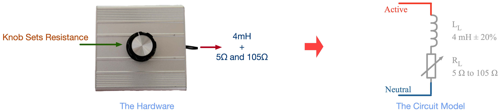] - A load that consists of a fixed inductor, L<sub>L</sub>, in series with a variable resistor, R<sub>L</sub>, is provided to you - The impedance of this load can be expressed in the phasor-domain as \\[ Z\_{\text{L}} = R\_{\text{L}} + j \omega\_{\text{L}} L\_{\text{L}} \quad \text{where} \quad \omega\_{\text{L}} = 2 \pi f\_{\text{L}} = 1000 \pi \quad \because \ f\_{\text{L}} = 500\,\text{Hz} \\] - The inductor has a fixed inductance of 4mH ± 20% - The resistance of the variable resistor can be set between 5Ω and 105Ω using the knob - Helps control complex power of the load to between specified 2.5VA and 7.5VA --- name: S7 # How Does an Energy Monitor Work? .center[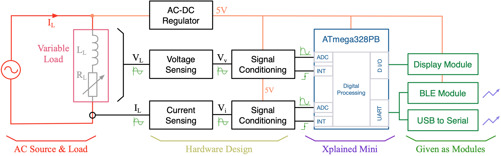] - To implement the core energy monitor functionalities we have to - Measure the load current and voltage - Process these measurements to calculate the power and energy used by the load - To implement a suitable user interface we may need to - Control a display to show the voltage, current, power and energy measurements to the user(s) - Communicate these measurements wirelessly with smart devices - Communicate these measurements through a cable with for example a computer --- name: S8 # How Can we Build an Energy Monitor? .left-column-s[ - Can we build an energy monitor using hardware only? - Electromechanical & analog energy meters have been used in the past - Significant design effort is required to produce the complex electronic processing circuits - Difficult and costly to modify the system - We cannot build an energy monitor using only software - Must interact with the physical world to measure voltage and current - Have to produce electrical signals to drive the display and serial comms. - Electromagnetic waves are needed for wireless communication - A solution using a mixture of software and hardware is likely to be the best - Simpler to build, cheaper, and can be easily iterated to improve the design - Hardware is used for interaction with the physical world - Software is used to process, control and communicate ] .right-column-s[ .center[<img src="img/Meter2.png" width="185px"> .credits[ An electro-mechanical meter [[1]](https://en.wikipedia.org/wiki/Electricity_meter) ] ] .center[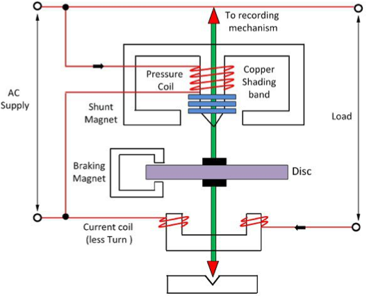 .credits[ The construction [[2]](https://circuitglobe.com/energy-meter.html) ] ] ] --- name: S9 # The Recommended Design .zoom175[ .center[] ] - Hardware (electronics) is used to sense the AC voltage & current and then condition them - Produce level-shifted & filtered AC voltage signals that correspond to source voltage and current - Produce rising and falling edges that correspond to zero crossings of source voltage (and current) - The embedded system (i.e. hardware modules in a microcontroller together with software running on it) process the information and generate control and communication signals - Require developing drivers to interact with hardware modules (e.g. UART, ADC and timers) - Require developing software algorithms to process information and generate outputs - Off the shelf modules are used for display, Bluetooth and serial --- name: S10 # Hardware Functional Requirements - Sensors need to be designed to sense the voltage as well as the current - Voltage sensor needs to produce a scalled down **voltage signal**, v<sub>v(t)</sub>, representative of v<sub>L(t)</sub> - Current sensor needs to produce a **voltage signal**, v<sub>i(t)</sub>, representative of load current, i<sub>L(t)</sub> - The peak-to-peak amplitude of v<sub>v(t)</sub> and v<sub>i(t)</sub> should be 5V or lower - Amplifiers need to be designed to level-shift the **voltage signals** derived from the sensors - **Voltage signals** from sensors are AC, but the microcontroller can only handle 0V to 5V - Since v<sub>v(t)</sub> is going to be sufficiently large, it does not need to be amplified - Since v<sub>i(t)</sub> is going to be very small to not impact i<sub>L(t)</sub>, it does need to be amplified - Amplified and level-shifted signals need to be filtered - 1st order low-pass filters can be used to filter level-shifted v<sub>v(t)</sub> and v<sub>i(t)</sub> - Zero-crossing of v<sub>v(t)</sub> needs to be detected to tell microcontroller when to take readings - A comparator can be used to detect zero-crossing of level-shifted and filtered v<sub>v(t)</sub> - A half-wave rectifier with a linear regulator IC needed to derive a 5V<sub>DC</sub> power source from v<sub>L(t)</sub> --- name: S11 # The Design Process .center[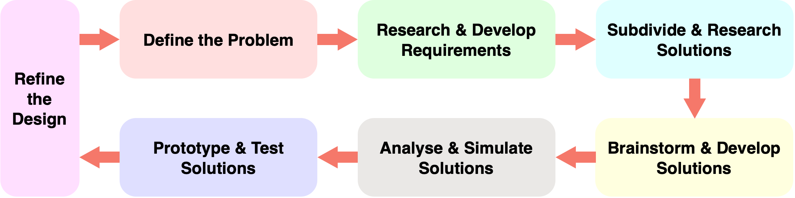] - Often there are multiple suitable solutions to an engineering problem - Selection of final solution is based on technical merits as well as non-technical aspects like cost, time-to-market, resource requirements, etc. - Design is therefore an interactive process to strike a balance between different tradeoffs in order to reach an appropriate and refined solution to an engineering problem - Sometimes this might not be the most technically superior solution --- class: title-slide layout: false count: false .logo-title[] # Circuit Analysis ### A Refresher --- layout: true name: template_slide .logo-slide[] .footer[[Duleepa J Thrimawithana](https://www.linkedin.com/in/duleepajt) & [Grant A Covic](https://www.linkedin.com/in/grant-covic-179546a/), Department of Electrical, Computer and Software Engineering (2020)] --- name: S12 # What is Voltage and Current? .left-column[ - Electricity is generally referred to as electrons moving through closed circuit - The energy in these moving electrons in a circuit can be converted to do useful work for us like heating and lighting - Current is a measure of how many electrons are flowing through a circuit branch - Voltage is a measure of the charge imbalance that provides the force to move the electrons through a circuit branch - Resistance of a circuit branch is a measure of how hard it is for the electrons to flow through that branch - Ohm's law relates voltage, current and resistance of a resistor \\[ V\_{\text{DC}} = I\_{\text{DC}}R \quad \text{or} \quad v(t) = i(t)R \\] ] .right-column[ .center[ 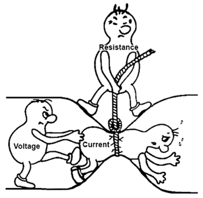 .credits[ Voltage, current & resistance analogy [[3]](https://www.instructables.com/Ohms-Law-for-Dummies/) ] ] ] --- name: S13 # What is Circuit Analysis? - An electronic circuit is made of passive elements and active elements - Passive elements mainly include resistors, inductors and capacitors - Active elements include BJTs, diodes, ICs, etc. - Working out voltage across and current through elements of a circuit is referred to as circuit analysis - This is usually a 3 step process - But, sometimes you may start with a circuit transformation to simplify the analysis - Circuit analysis is divided in to DC, AC steady-state, transient analysis - In DC analysis inductors are considered shorts and capacitors as open circuits - AC steady-state analysis is often conducted in the phasor domain by representing inductive and capacitive elements as reactances - Can be analysed in time-domain but more complicated - Transient circuit analysis is complicated and outside the scope of this course - You will learn more on this topic in future papers --- name: S14 # Circuit Analysis - Step 1 - Write an expression that relates voltage across each circuit element to current through them - Relation between voltage across and current through active elements can be complex - Voltage across and current through the R, L and C elements can be expressed as in table <style type="text/css"> .tg {border-collapse:collapse;border-color:#9ABAD9;border-spacing:0;} .tg td{background-color:#EBF5FF;border-color:#9ABAD9;border-style:solid;border-width:1px;color:#444; font-family:Arial, sans-serif;font-size:14px;overflow:hidden;padding:10px 5px;word-break:normal;} .tg th{background-color:#409cff;border-color:#9ABAD9;border-style:solid;border-width:1px;color:#fff; font-family:Arial, sans-serif;font-size:14px;font-weight:normal;overflow:hidden;padding:10px 5px;word-break:normal;} .tg .tg-wp8o{border-color:#000000;text-align:center;font-weight:bold;vertical-align:center} .tg .tg-wp81{border-color:#000000;text-align:center;font-weight:normal;vertical-align:center} .tg .tg-wp82{background-color:#EBF5FF;border-color:#000000;text-align:center;padding:0px 0px;font-weight:normal;vertical-align:center} </style> <table class="tg" style="undefined;table-layout: fixed; width: 1020px"> <colgroup> <col style="width: 120px"> <col style="width: 180px"> <col style="width: 180px"> <col style="width: 180px"> <col style="width: 180px"> <col style="width: 180px"> </colgroup> <thead> <tr> <th class="tg-wp8o" rowspan="2"></th> <th class="tg-wp8o">DC</th> <th class="tg-wp8o" colspan="2">AC Steady-State</th> <th class="tg-wp8o" colspan="2">Transient</th> </tr> <tr> <th class="tg-wp8o">Time-Domain</th> <th class="tg-wp8o">Time-Domain</th> <th class="tg-wp8o">Phasor-Domain</th> <th class="tg-wp8o">Time-Domain</th> <th class="tg-wp8o">S-Domain</th> </tr> </thead> <tbody> <tr> <th class="tg-wp8o">R</td> <td class="tg-wp8o">\(V_\text{DC} = I_\text{DC}R\)</td> <td class="tg-wp8o">\(v(t) = i(t)R \)</td> <td class="tg-wp8o">\(\bar{V} = \bar{I}R\)</td> <td class="tg-wp8o">\(v(t) = i(t)R \)</td> <td class="tg-wp8o">\(V(s) = I(s)R \)</td> </tr> <tr> <th class="tg-wp8o">L</td> <td class="tg-wp81">Short Cct.</td> <td class="tg-wp8o">\(v(t) = L \frac{\mathrm{d} i(t)}{\mathrm{d} t} \)</td> <td class="tg-wp8o">\(\bar{V} = j X_L \bar{I} = j\omega L \bar{I}\)</td> <td class="tg-wp8o">\(v(t) = L \frac{\mathrm{d} i(t)}{\mathrm{d} t} \)</td> <td class="tg-wp8o">\(V(s) = s L I(s)\)</td> </tr> <tr> <th class="tg-wp8o">C</td> <td class="tg-wp81">Open Cct.</td> <td class="tg-wp8o">\(i(t) = C \frac{\mathrm{d} v(t)}{\mathrm{d} t} \)</td> <td class="tg-wp8o">\(\bar{V} = j X_C \bar{I} = \frac{\bar{I}}{j\omega C} \)</td> <td class="tg-wp8o">\(i(t) = C \frac{\mathrm{d} v(t)}{\mathrm{d} t} \)</td> <td class="tg-wp8o">\(V(s) = \frac {I(s)} {sC} \)</td> </tr> </tbody> </table> .center[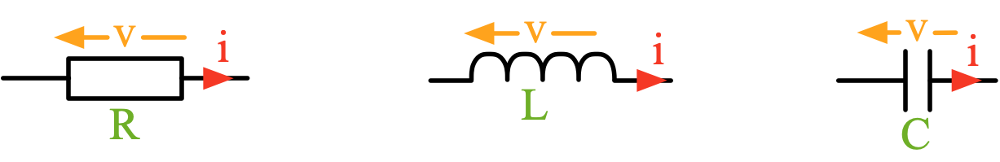] --- name: S15 # Circuit Analysis - Step 2 - Use KVL and KCL to relate voltages and currents in each branch of the circuit - We will need as many relations as the number of unknown voltages or currents - KVL and KCL applies equally to DC, AC steady-state and transient analysis - KVL states that voltages across each circuit element in a closed loop (e.g., KVL<sub>1</sub>, KVL<sub>2</sub> and KVL<sub>3</sub> indicated in circuit) of a circuit should add to zero - KCL states that sum of currents entering and leaving a circuit (e.g., KCL<sub>1</sub> indicated in circuit) node should be zero .center[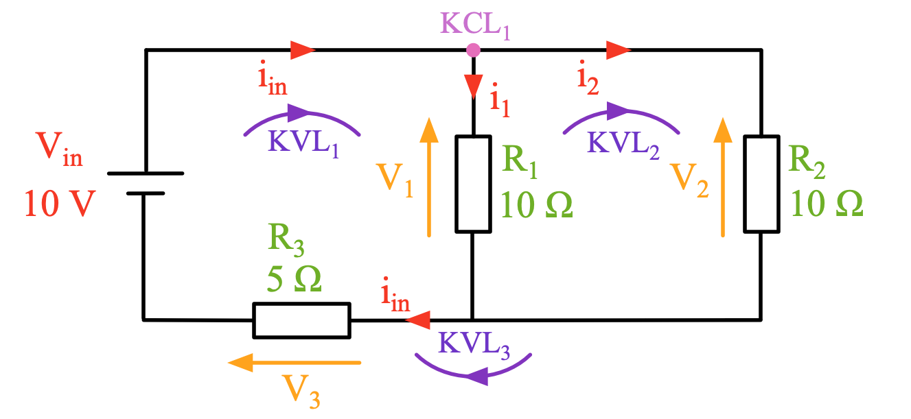] --- name: S16 # Circuit Analysis - Step 3 .center[] - Solve the simultaneous equations from KVL and KCL by substituting for V & I relationships from 1st step - As an example for circuit here there are 3 unknown Is and Vs, and the 3 equations to solve are - At node KCL<sub>1</sub>: `\( \quad I_\text{in} - I_{1} - I_{2} = 0 \)` - From loop KVL<sub>1</sub>: `\( \quad V_\text{in} - V_{1} - V_{3} = 0 \quad \Rightarrow \quad V_\text{in} = I_{1}R_{1} + (I_{1} + I_{2})R_{3} \)` - From loop KVL<sub>2</sub>: `\( \quad V_{1} - V_{2} = 0 \quad \Rightarrow \quad I_{1}R_{1} = I_{2}R_{2} \)` - Solving the 2 KVL equations and substituting circuit parameters we get `\( I_{1} = I_{2} = 0.5\,\text{A} \ \, \text{\&} \ \, I_{\text{in}} = 1\,\text{A} \)` - Could have used a circuit transformation to combine R<sub>1</sub> & R<sub>2</sub> in parallel and simplified the analysis --- name: S17 # Example 1: AC Steady-State Analysis .questions[ Determine current flowing through each of the 2 AC circuits below at steady-state using time-domain and phasor-domain analysis techniques. Which analysis technique is easier to use? Sketch the time-domain voltage and current waveforms as well as the voltage and current phasors for each circuit. ] .center[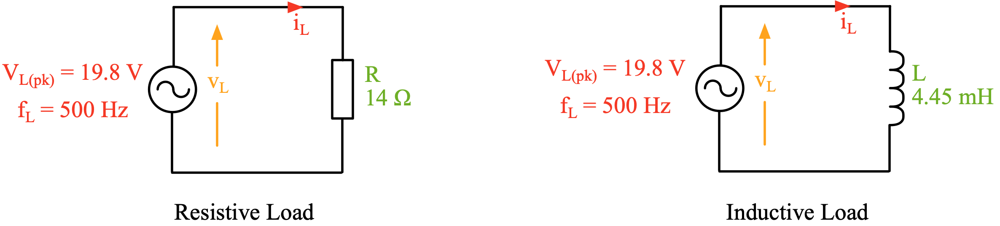] --- class: title-slide layout: false count: false .logo-title[] # Electrical Power ### A Refresher --- layout: true name: template_slide .logo-slide[] .footer[[Duleepa J Thrimawithana](https://www.linkedin.com/in/duleepajt) & [Grant A Covic](https://www.linkedin.com/in/grant-covic-179546a/), Department of Electrical, Computer and Software Engineering (2020)] --- name: S18 # What is Electrical Power - In DC circuits operating at steady-state, there is only real power (can be consumed or generated) - In AC circuits operating at steady-state, electrical power is divided in to **real power (P in W)**, **reactive power (Q in VAR)** and **apparent power (|S| in VA)** - Real power transfer happens when electrons move through circuit elements that dissipate, store or convert energy in moving electrons - These circuit elements include resistors (dissipate energy), batteries (store energy), LEDs (convert energy), etc. - In AC circuits, inductive and capacitive circuit elements result in reactive power since they absorb energy from electrons during part of the time period and release this energy during the remainder of the period - To understand and define real, reactive and apparent power we use **instantaneous power** given by \\[ p(t) = v(t) \cdot i(t) \\] - Note, AC circuits may not always use sinusoidal sources, and they can be of any wave shape --- name: S19 # Real Power in AC Circuits .left-column-s[ - Real power by **definition is the average of p<sub>(t)</sub> over a time period, T<sub>L</sub>** - Consider the resistive load in ['Example 1'](#S17), which only consumes real power - From our analysis we know that \\[ v\_{\text{L}}(t) = V\_{\text{L(pk)}} \cos (1000 \pi t) \quad \text{and} \quad i\_{\text{L}}(t) = \dfrac{V\_{\text{L(pk)}} \cos (1000 \pi t)}{R}\\] - Instantaneous power in the resistive load in ['Example 1'](#S17) is therefore \\[ p\_{\text{L}}(t) = \frac {V^2\_{\text{L(pk)}}} {R} \cos ^2 (1000 \pi t) = \frac {V^2\_{\text{L(pk)}}} {2R} \left[ \cos (2000 \pi t) + 1 \right] \\] - Real power delivered to the resistive load in ['Example 1'](#S17) is therefore \\[ P = \frac{1} {T\_\text{L}} \int\_{0}^{T\_\text{L}} p\_{\text{L}}(t)\,dt \ = \frac{1} {T\_\text{L}} \int\_{0}^{T\_\text{L}} v(t)\cdot i(t) \,dt \ = \frac{V^2\_{\text{L(pk)}}}{2R} \\] ] .right-column-s[ .center[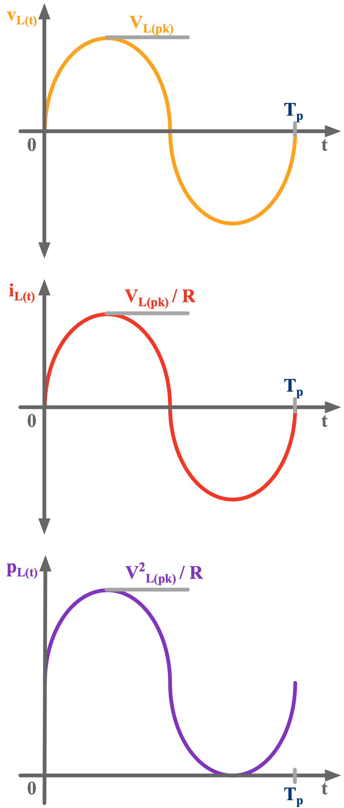] ] --- name: S20 # Root Mean Square (RMS) of Signals - RMS value of an AC voltage or a current is defined to provide a measure of (real) power dissipated in a resistive load in an AC circuit - Using the definition of real power and Ohm's law, power dissipated in a resistive load is given by \\[ P = \frac{1} {T\_\text{L}} \int\_{0}^{T\_\text{L}} p\_{\text{L}}(t)\,dt \ = \frac{1} {T\_\text{L}} \int\_{0}^{T\_\text{L}} v(t)\cdot i(t) \,dt \ = \frac {1} {RT\_\text{L}} \int\_{0}^{T\_\text{L}} v^2(t) \,dt \ \overset{\underset{\mathrm{OR}}{}}{=} \ \frac{R} {T\_\text{L}} \int\_{0}^{T\_\text{L}} i^2(t) \,dt\\] - From this, we could develop the definition of RMS value of an AC voltage or a current as \\[ V^2\_{\text{RMS}} = \frac{1} {T\_\text{L}} \int\_{0}^{T\_\text{L}} v^2(t) \,dt \quad \text{and} \quad I^2\_{\text{RMS}} = \frac{1} {T\_\text{L}} \int\_{0}^{T\_\text{L}} i^2(t) \,dt \\] - As an example, RMS value of a **sinusoidal** AC voltage (and similarly a current) is give by \\[ V\_{\text{RMS}} = \sqrt{ \frac{1} {T\_\text{L}} \int\_{0}^{T\_\text{L}} V^2\_{\text{L(pk)}} \cos ^2 (\omega\_{\text{L}} t) \,dt } = \sqrt{ \frac{1} {T\_\text{L}} \int\_{0}^{T\_\text{L}} \frac {V^2\_{\text{L(pk)}}} {2} \ \left[ \cos(2\omega\_{\text{L}} t) + 1 \right] \,dt } = \frac {V\_{\text{L(pk)}}} {\sqrt{2}}\\] --- name: S21 # Example 2: Calculating the RMS .questions[ A square wave voltage source, V<sub>sq</sub>, is used to power an light bulb, which is modelled as an *ideal fixed* resistance, R. Determine the RMS value of the voltage across the light bulb. Using the RMS calculated, determine the power consumed by the light bulb. ] .center[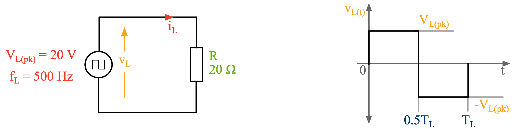] --- name: S22 # Apparent Power in AC Circuits - Apparent power is a measure of the voltage and current required to drive an AC circuit - The definition of apparent power is therefore simply \\[ \left| S \right| = V\_\text{RMS}\cdot I\_\text{RMS} \\] - Apparent power required to drive an AC circuits that has inductors and/or capacitors is greater than real power consumed by this circuit - The ratio between the real power and apparent power is defined as the power factor of an AC circuit \\[ \mathit{p.f.} = \frac {P} {\left| S \right|} \\] - It is important for an electrical circuit to have a power factor of 1 (or close to 1) - Higher power factors minimizes the voltage and current that is required to drive an AC circuit --- name: S23 # Reactive Power in AC Circuits (PI) - Reactive power is a measure of energy circulating back and forth in an electrical circuit - For example, inductive and capacitive elements in a circuit store energy during part of the time period and release this stored energy during the remainder of the time period - Since there is no net energy flow, the average of the portion in p<sub>(t)</sub> that corresponds to reactive power is 0 - This also means that the p<sub>(t)</sub> waveform will have positive and negative portions - Reactive power can be defined as the vector difference between apparent power and real power \\[ Q = \sqrt{\left| S \right|^2 -P^2} \\] - Using real and reactive power, we can also define complex power as \\[ S = P + jQ \\] - Note that S is not a phasor, its simply a complex number --- name: S24 # Reactive Power in AC Circuits (PII) .left-column-s[ - Consider the inductive load in ['Example 1'](#S17), which only results in reactive power (i.e., the average of p<sub>(t)</sub> over a time period, T<sub>p</sub> should be zero) - From our analysis we know that \\[ v\_{\text{L}}(t) = V\_{\text{L(pk)}} \cos (1000 \pi t) \quad \text{and} \quad i\_{\text{L}}(t) = \frac{V\_{\text{L(pk)}} \cos (1000 \pi t - \frac{\pi}{2})} {\omega\_{\text{L}} L}\\] - Instantaneous power in the inductive load in ['Example 1'](#S17) is therefore \\[ p\_{\text{L}}(t) = \frac {V^2\_\text{L(pk)}} {\omega\_{\text{L}} L} \cos (1000 \pi t) \cos \left(1000 \pi t - \tfrac{\pi}{2}\right) = \frac {V^2\_\text{L(pk)}} {2\omega\_{\text{L}} L} \sin (2000 \pi t) \\] - Real and reactive power delivered to the inductive load in ['Example 1'](#S17) are \\[ P = \frac{1} {T\_\text{L}}\int\_{0}^{T\_\text{L}} p\_{\text{L}}(t)\,dt \ = 0 \quad \text{and} \quad Q = \frac {V^2\_\text{L(pk)}} {2\omega\_{\text{L}} L} = \frac {V^2\_\text{L(RMS)}} {\omega\_{\text{L}} L} \\] ] .right-column-s[ .center[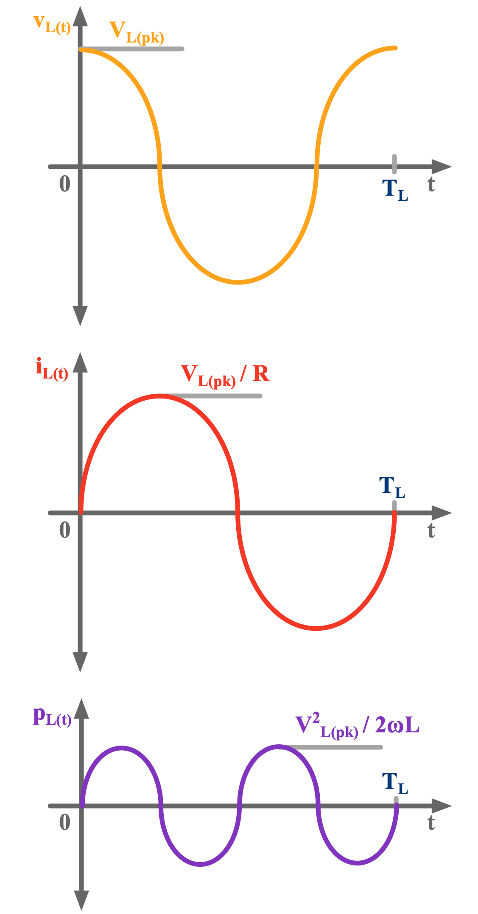] ] --- name: S25 # Notes on Simplified Expressions - As engineers we tend to use simplified expressions to calculate electrical quantities - In previous courses you may have learnt that RMS of a voltage or a current is related to its peak as \\[ V\_\text{pk} = \sqrt{2} V\_\text{RMS} \quad \text{and} \quad I\_\text{pk} = \sqrt{2} I\_\text{RMS} \\] - These RMS relationships **only hold valid for perfect sinusoidal** voltages and currents - Similarly, you may have learnt that power is a function of RMS voltage and/or current as \\[ P = V\_\text{RMS} I\_\text{RMS} = I^2\_\text{RMS}R = \frac{V^2\_\text{RMS}}{R} \\] - These power relationships **only hold valid for ideal resistors** - In practice, **perfect sinusoidal** sources do not exists and there are components other than resistors that consume real power (e.g., LEDs) - In these situations, fundamental relationships we derived help us determine P, S, Q and RMSs --- name: S26 # Example 3: Complex Loads .questions[ Using phasor-domain analysis techniques determine the RMS current flowing through the complex load below when R<sub>L</sub> is 10Ω as well as 30Ω. For each R<sub>L</sub>, sketch the conceptual v<sub>L(t)</sub>, i<sub>L(t)</sub> and p<sub>(t)</sub> waveforms. Determine the real, reactive and apparent power consumed by the complex load. What is the power factor at each R<sub>L</sub>? If the load is operated for 10 minutes determine energy consumption of the load when R<sub>L</sub> is 30Ω. ] .center[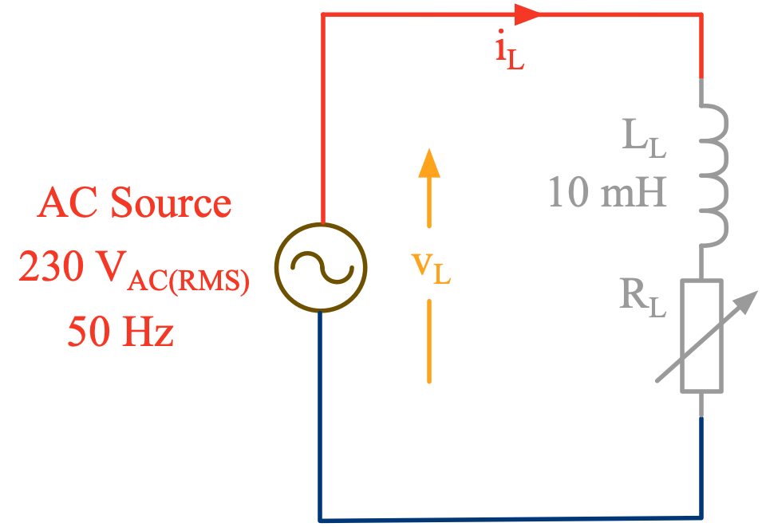] --- class: title-slide layout: false count: false .logo-title[] # Voltage Sensing ### Analysis & Design --- layout: true name: template_slide .logo-slide[] .footer[[Duleepa J Thrimawithana](https://www.linkedin.com/in/duleepajt) & [Grant A Covic](https://www.linkedin.com/in/grant-covic-179546a/), Department of Electrical, Computer and Software Engineering (2020)] --- name: S27 # Voltage Sensing - The signal conditioning circuitry and the microcontroller can only process very low voltages - Electrical specifications of the devices mainly sets the signal amplitudes that can be processed - For most designs, signal amplitudes should be kept at 5V or smaller - The functionality of the voltage sensor circuitry is to step-down the voltage to be measured to a safer level that can be passed through the signal conditioning circuitry to the microcontroller - The most common approach is to use a voltage divider to implement the voltage sensor - The voltage divider is designed to step-down the voltage to be measured to the required level \\[ v\_\text{vs}(t) = v\_{\text{L}}(t) \ \frac{R\_\text{b}}{R\_\text{a} + R\_\text{b}} \\] <div style="line-height:50%;"> <br> </div> .center[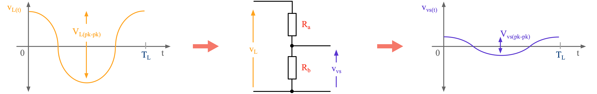] --- name: S28 # Recommended Implementation .center[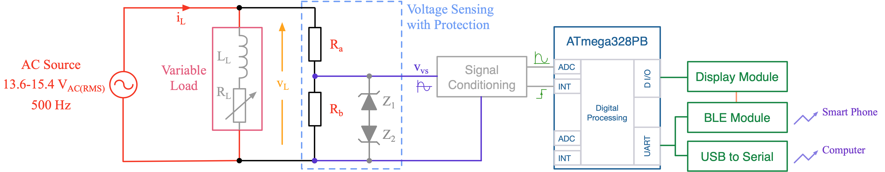] - In your project the voltage divider can be connected across the 2 terminals of the AC source - A pair of back-to-back Zener diodes, Z<sub>1</sub> & Z<sub>2</sub>, can be added for protection against for example voltage surges that might by present across v<sub>L</sub> - Under normal operation the Zener diodes do not impact the behavior of the voltage divider - When selecting R<sub>a</sub> & R<sub>b</sub> we also need to minimize power dissipation in them while making sure sufficiently large signal-to-noise ratio (SNR) and low sensitivity to the environment - These are contradicting requirements and design is about making a good tradeoff --- name: S29 # Example Design Process - Lets design our voltage divider to step-down v<sub>L</sub> to an amplitude no greater than 1V<sub>pk-pk</sub> - In the labs you will be guided to determine a more suitable peak-peak amplitude - We need to consider the highest v<sub>L</sub> to be measured measured (i.e., 15.4V) to ensure V<sub>vs(pk-pk)</sub> ≤ 1V - Using this information we can derive the relation \\[ V\_\text{vs(pk-pk)} = V\_\text{L(pk-pk)} \ \frac{R\_\text{b}}{R\_\text{a} + R\_\text{b}} \quad \Rightarrow \quad 1 \geq 15.4\times 2\sqrt{2} \ \frac{R\_\text{b}}{R\_\text{a} + R\_\text{b}} \quad \Rightarrow \quad R\_\text{a} \geq 41.4 R\_\text{b}\\] - The power dissipated as loss in R<sub>a</sub> & R<sub>b</sub> can be expressed as \\[ P\_\text{vs-loss} = \frac{V^2\_\text{L(RMS)}}{R\_\text{a} + R\_\text{b}} \\] - To determine appropriates values for R<sub>a</sub> & R<sub>b</sub> we need to minimize P<sub>vs-loss</sub> while making sure sufficiently large signal-to-noise ratio (SNR) and low sensitivity to the environment - For UG work, avoid using resistance values greater than 500kΩ to minimize sensitivity --- name: S30 # Example 4: SNR and Sensitivity .questions[ Using power dissipation, signal-to-noise ratio (SNR) and sensitivity to the environment as figures of merit, discuss the advantages and disadvantages of using resistors for your voltage divider in the Ohms vs Kilo-Ohms vs Mega-Ohms range. What other aspects would you consider when selecting R<sub>a</sub> & R<sub>b</sub>? ] --- class: title-slide layout: false count: false .logo-title[] # Current Sensing ### Analysis & Design --- layout: true name: template_slide .logo-slide[] .footer[[Duleepa J Thrimawithana](https://www.linkedin.com/in/duleepajt) & [Grant A Covic](https://www.linkedin.com/in/grant-covic-179546a/), Department of Electrical, Computer and Software Engineering (2020)] --- name: S18 # Current Sensing - The signal conditioning circuitry and the microcontroller prefer processing **voltages** - The functionality of the current sensor is to derive a voltage proportional to the current through it - The most common approach is to insert a small a current sense resistor in the path of current flow - Current sense resistor should be sufficiently small so it does not impact the load current - The voltage across the current sense resistor is proportional to the current through it since \\[ v\_{\text{is}}(t) = i\_{\text{L}}(t)\cdot R\_\text{s} \\] - Alternatively, [hall-effect sensors](https://www.allegromicro.com/en/insights-and-innovations/technical-documents/hall-effect-sensor-ic-publications/non-intrusive-hall-effect-current-sensing-techniques-for-power-electronics) (AC or DC) or [current transformers](https://www.electronics-tutorials.ws/transformer/current-transformer.html) (AC only) can be used <div style="line-height:50%;"> <br> </div> .center[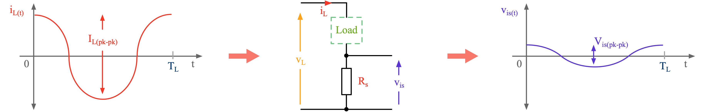] --- name: S28 # Recommended Implementation .center[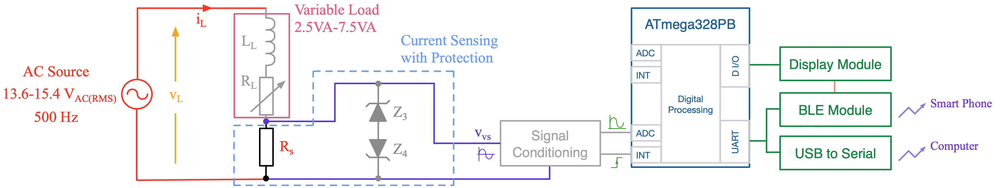] - In your project the current sense resistor is connected in series with the AC load - A pair of back-to-back Zener diodes, Z<sub>3</sub> & Z<sub>4</sub>, can be added for protection against for example current surges that might by present in i<sub>L</sub> - Under normal operation the Zener diodes do not impact the behavior of the voltage divider - When selecting R<sub>s</sub> we also need to minimize power dissipation in them while making sure sufficiently large signal-to-noise ratio (SNR) and low sensitivity to the environment - These are contradicting requirements and design is about making a good tradeoff --- name: S29 # Example Design Process - Lets design our R<sub>s</sub> to have a power dissipation, P<sub>is-loss</sub>, no greater than 50mW as an example - We need to consider the highest i<sub>L</sub> to be measured measured to ensure P<sub>is-loss</sub> ≤ 50mW - Highest I<sub>L(RMS)</sub> is at lowest V<sub>L(RMS)</sub> and highest VA specified (i.e., I<sub>L(RMS)</sub> = 7.5VA/13.6V = 0.55A<sub>RMS</sub>) - Using this information we can derive the relation \\[ P\_\text{is-loss} = I^2\_\text{L(RMS)}\cdot R\_\text{s} \quad \Rightarrow \quad 0.05 \geq 0.55^2 R\_\text{s} \quad \Rightarrow \quad R\_\text{s} \leq 165\, \text{m}\Omega \\] - If R<sub>s</sub> is choosen as 160mΩ, V<sub>is</sub> measured at both highest and lowest i<sub>L</sub> are \\[ V\_\text{is(pk-pk)-highest} = 0.55\times 2\sqrt{2}\times 0.16 \approx 250\, \text{mV} \\] \\[ V\_\text{is(pk-pk)-lowest} = 0.16\times 2\sqrt{2}\times 0.16 \approx 72\, \text{mV}\\] - To determine an appropriate value for R<sub>s</sub> we need to minimize P<sub>vs-loss</sub>, size and cost while making sure sufficiently large signal-to-noise ratio (SNR) --- name: S30 # Example 5: Selection of R<sub>s</sub> .questions[ Using power dissipation, signal-to-noise ratio (SNR), cost and size as figures of merit, discuss the advantages and disadvantages of choosing an R<sub>s</sub> that is much greater than or smaller than what we calculated in the example design. What other aspects would you consider when selecting R<sub>s</sub>? How can we improve the measurement accuracy specially at lower i<sub>L</sub> values? ] --- class: title-slide layout: false count: false .logo-title[] # Questions?